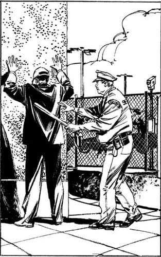
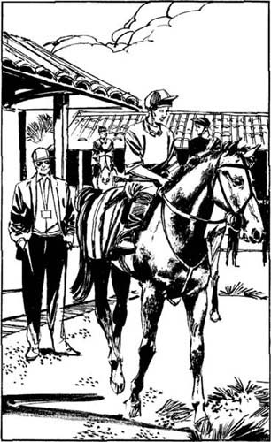

Listen to Part 1:
Rẽ khỏi xa lộ cao tốc ở Hipodrom Santa Rosita. Đây là một hipodrom nhỏ nhưng tuyệt đẹp. Có những hàng cây cao bên cạnh đường đua phủ bụi. Phía sau là những ngọn núi cao chót vót, xanh đen. Một số kỵ sĩ đang cưỡi ngựa trên đường đua. Mặt trời chiếu rọi từ bầu trời xanh xuống. Mặc dù đã về chiều nhưng ánh nắng vẫn rất chói chang. Mọi thứ thật thanh bình.
Không có nhiều xe ở bãi đậu xe. Tôi đỗ xe, đội mũ lưỡi trai và đeo kính râm. Sau đó, tôi rời Chrysler và đi bộ về phía đường đua. Tôi đứng bên đường đua đầy bụi và ngắm nhìn những chú ngựa. Hôm nay không có cuộc đua nào. Đây là thời gian huấn luyện của chúng.
Những chú ngựa rất to lớn và chạy rất nhanh. Tôi bất ngờ. Khi một chú ngựa chạy ngang qua tôi, tiếng vó ngựa nghe rất lớn và bụi bặm bay lên không trung.
Tôi nhìn xung quanh. Gần đường đua có một số tòa nhà văn phòng và một số chuồng ngựa. Có một hàng rào cao xung quanh những tòa nhà này. Tôi đi về phía khu vực chuồng ngựa.
Có một cổng tại hàng rào. Cánh cổng rất cao. Nó đã được đóng lại. Khi tôi đến gần hơn, tôi thấy cánh cổng mở ra. Một chiếc xe tải có rơ mooc đi ra. Tôi không thấy ai gần cổng, nhưng nó đóng lại sau chiếc rơ mooc.
Tôi đợi và quan sát. Vài phút trôi qua. Sau đó, một chiếc xe bán tải có rơ mooc từ bên đường đi vào. Chiếc xe dừng lại gần cổng. Có một vé gửi xe ở cửa sổ trước của chiếc xe bán tải.
Người lái xe thò đầu ra ngoài cửa sổ bên của xe. Anh ta nói vào một hộp kim loại gần hàng rào. Sau đó là cánh cổng mở ra và xe ô tô cùng rơ mooc đi qua cổng.
Tôi đi đến cổng và đợi. Một phút sau, một chiếc xe khác từ bên đường đi vào. Người lái xe nói vào hộp. Cánh cổng mở ra. Khi chiếc xe đi qua cổng, tôi đi bộ bên cạnh nó. Bây giờ tôi đã vào bên trong khu vực chuồng ngựa. Tôi đi bộ vài mét cách xa cổng.
‘Ê, anh kia!’ một người đàn ông hét lên. Đột nhiên, có ai đó đến sau lưng tôi. Anh ta giữ tay tôi và đẩy tôi vào tường chuồng ngựa.
Listen to Part 2:
‘Đứng dựa vào tường! Giơ tay ra! Đừng quay lại!’ người đàn ông nói.
Tôi làm theo những gì người đàn ông kia bảo. Anh ta lục túi quần áo của tôi. Người đàn ông ở sau lưng tôi và tôi không thể nhìn thấy khuôn mặt của anh ta. Anh ta lấy giấy phép thám tử của tôi ra khỏi túi. Sau đó là một tiếng cười lớn. Người đàn ông tháo mũ lưỡi trai và kính râm của tôi ra.
‘Lenny Samuel!’ người đàn ông nói. ‘Quay lại!’
Tôi quay lại. Một người đàn ông to lớn đang đứng trước mặt tôi. Anh ta mặc đồng phục màu nâu với một chiếc mũ tối màu và kính. Tôi biết anh ta. Tên anh ta là Slim Peters. Nhưng cái tên của anh ta chỉ là một trò đùa. Anh ta không gầy - anh ta béo! Nhiều năm trước, cả Slim và tôi đều là cảnh sát L.A.
‘Slim!’ tôi nói. "Bạn đang làm gì ở đây?"
Slim chỉ vào bộ đồng phục của mình. ‘Tôi là lính gác an ninh của trường đua,’ anh ta trả lời. ‘Nhưng tôi hỏi bạn một câu hỏi. Bạn đang làm gì ở đây?’
Tôi không trả lời câu hỏi của anh ấy.
‘Làm sao bạn thấy tôi?’ tôi hỏi.
Slim chỉ tay vào cổng. ‘Tôi thấy anh trên ti vi,’ anh ta trả lời. Anh ta lại cười.
Có một camera TV trên hàng rào phía trên cổng. Sau đó, Slim chỉ tay vào một tòa nhà nhỏ gần cổng.
Listen to Part 3:

‘Đứng dựa vào tường! Giơ tay ra! Đừng quay lại!’ người đàn ông nói.
‘Tôi làm việc ở đó,’ anh ta nói.
‘Vậy là bạn có thể nhìn thấy mọi người vào và ra trên TV, đúng không?’ tôi hỏi.
‘Đúng vậy,’ Slim trả lời. ‘Nhưng Lenny, bạn vẫn chưa trả lời câu hỏi của tôi. Bạn đang làm gì ở đây?’
‘Tôi muốn nói chuyện với một người hiểu biết về ngựa đua, Slim,’ tôi nói. ‘Những chú ngựa đua xuất sắc nhất sẽ thế nào khi chúng giải nghệ? Bạn có thể giúp tôi không?’
Tôi không hỏi Slim về người đàn ông mảnh khảnh, đen đủi kia, người lái chiếc xe tải 4x4 màu đỏ.
‘Hãy đến văn phòng của tôi,’ Slim nói. ‘Chúng ta sẽ uống cà phê. Và chúng ta sẽ nói về vấn đề của bạn.’
Chúng tôi đến văn phòng của Slim và ngồi xuống. Slim trả lại cho tôi giấy phép thám tử.
‘Bạn có phải là nhân viên bảo vệ duy nhất ở đây, Slim?’ tôi hỏi.
Listen to Part 4:
‘Tôi là nhân viên bảo vệ duy nhất ở đây chiều nay,’ Slim trả lời. ‘Hôm nay không có cuộc đua. Thứ sáu là ngày huấn luyện. Những chú ngựa đang được huấn luyện vào hôm nay. An ninh thấp trong những ngày huấn luyện. Có nhiều bảo vệ hơn vào những ngày đua. Khi có đua, an ninh rất cao. Vào những ngày đua, chúng tôi phải kiểm tra danh tính của mọi người. Và các quan chức trường đua phải kiểm tra danh tính của những chú ngựa vào những ngày đua.’
‘Những chú ngựa có danh tính không?’ tôi hỏi.
‘Có chứ,’ Slim trả lời. ‘Mỗi con ngựa đua đều có hộ chiếu có ảnh và ghi đầy đủ thông tin của chú ngựa trong đó. Và mỗi con ngựa đều có một con số được xăm bên trong miệng.’
Slim pha cà phê. Chúng tôi ngồi ở bàn làm việc của anh ta và uống cà phê. Slim nhìn vào màn hình TV khi có xe ô tô ra vào cổng. Sau đó, chúng tôi nói về vấn đề của tôi.
‘Tôi nên nói chuyện với ai về những chú ngựa đua đã giải nghệ?’ tôi hỏi Slim.
‘Hãy nói chuyện với những người huấn luyện ngựa đua hiện đang ở đây,’ Slim nói. ‘Hãy hỏi một trong những người huấn luyện về những chú ngựa đua đã giải nghệ. Nhưng nếu bạn định vào khu vực chuồng ngựa, bạn phải có thẻ an ninh. Tôi sẽ đưa cho bạn một cái.
Anh ta mở một ngăn kéo trong bàn làm việc và lấy ra một chiếc thẻ. Đó là một tấm thẻ màu vàng nhỏ gắn vào một sợi dây. Những dòng chữ TẤT CẢ KHU VỰC được viết trên thẻ. Slim đưa cho tôi chiếc thẻ.
‘Bạn có thể sử dụng thẻ này hôm nay,’ Slim nói. ‘Đeo nó quanh cổ bạn.’
‘Tôi có thể sử dụng nó vào ngày mai không?’ tôi hỏi.
‘Không. Bạn không thể sử dụng nó vào ngày mai,’ Slim trả lời. ‘Có thẻ màu vàng cho ngày huấn luyện và thẻ màu xanh cho ngày đua. Tôi không thể đưa cho bạn thẻ màu xanh. Chỉ có quan chức trường đua, chủ sở hữu, người huấn luyện, kỵ sĩ và những người chăm sóc ngựa mới có thẻ màu xanh. Những người khác không thể vào khu vực chuồng ngựa vào những ngày đua.’
Listen to Part 5:
Tôi cầm lấy thẻ, nhưng tôi tiếp tục nói chuyện với Slim. Tôi đã học được rất nhiều về an ninh của trường đua. Hipodrom Santa Rosita tổ chức đua ngựa từ tháng 12 đến tháng 4. Có những cuộc đua vào thứ Tư và thứ Bảy. Vào những ngày khác, ngựa được huấn luyện tại trường đua.
Những người chủ sở hữu ngựa có chuồng ngựa tại trường đua. Ngựa được đưa đến trường đua để huấn luyện. Chúng ở trong chuồng ngựa trong khi chờ tập luyện. Và chúng nghỉ ngơi tại chuồng ngựa sau khi tập luyện. Sau đó, những chú ngựa được đưa đi nơi khác. Vào những ngày huấn luyện, các xe rơ mooc chở ngựa ra vào cả ngày. Không ai kiểm tra ngựa hoặc xe rơ mooc vào những ngày huấn luyện.
Vào những ngày thi đấu, ngựa ở lại chuồng ngựa trong khi chờ thi đấu. Và chúng nghỉ ngơi tại chuồng ngựa sau khi thi đấu. Nhưng vào những ngày thi đấu, giấy tờ của ngựa đều được kiểm tra cẩn thận. Giấy tờ được kiểm tra khi ngựa đến trường đua. Chúng được kiểm tra lại khi chúng rời đi. Các quan chức trường đua xem hộ chiếu và hình xăm của ngựa.
Sau ba mươi phút, tôi đứng dậy và đi đến cửa. Slim đã cung cấp cho tôi rất nhiều thông tin. Tôi cố gắng nhớ mọi thứ mà anh ta đã nói với tôi.
‘Cảm ơn sự giúp đỡ của anh,’ tôi nói với Slim. ‘Bây giờ tôi sẽ nói chuyện với một số người huấn luyện.’ Tôi đeo thẻ an ninh màu vàng quanh cổ.
‘Được, Lenny,’ Slim nói. ‘Tôi rất vui được giúp đỡ. Hãy trả lại thẻ cho tôi khi bạn rời đi. Hãy đến đây và xem cuộc đua vào chiều mai nhé!’
Tôi mỉm cười. ‘Không, cảm ơn,’ tôi nói, ‘Tôi sẽ đi làm.’
Vài phút sau, tôi thấy một số kỵ sĩ đưa ngựa của họ trở lại chuồng ngựa. Tôi nói chuyện với một trong số họ. Sau đó, tôi nói chuyện với một số người chăm sóc ngựa. Tôi biết được một số sự thật thú vị về đua ngựa.
‘Mọi người kiếm được rất nhiều tiền từ đua ngựa,’ một người phụ nữ nói với tôi. ‘Mọi người cược hàng triệu đô la vào cuộc đua ngựa. Những chú ngựa đua giỏi nhất rất giá trị.
Listen to Part 6:
‘Hầu hết ngựa đua đều ít giá trị hơn khi về hưu’, cô ấy tiếp tục. ‘Nhưng một số con ngựa đua đã nghỉ hưu được sử dụng để phối giống. Chủ nhân của chúng sinh ra những con ngựa đua con từ chúng. Những chú ngựa giống này rất có giá trị.’
Không có thông tin nào trong số này giúp ích cho tôi. Sandy không sử dụng The Chief để sinh sản. The Chief kiếm được tiền vì mọi người muốn cưỡi một chú ngựa chiến thắng nổi tiếng. The Chief là ngựa của Sandy. Những người muốn cưỡi chú ngựa biết điều đó. Chỉ có Sandy mới có thể sử dụng ngựa để kiếm tiền. Vậy thì ai đã bắt The Chief? Và người đàn ông mảnh khảnh, đen đủi tại trang trại là ai? Tôi quyết định tìm chiếc xe 4x4 màu đỏ.

Vài phút sau, tôi thấy một số kỵ sĩ đưa ngựa của họ trở lại chuồng ngựa.